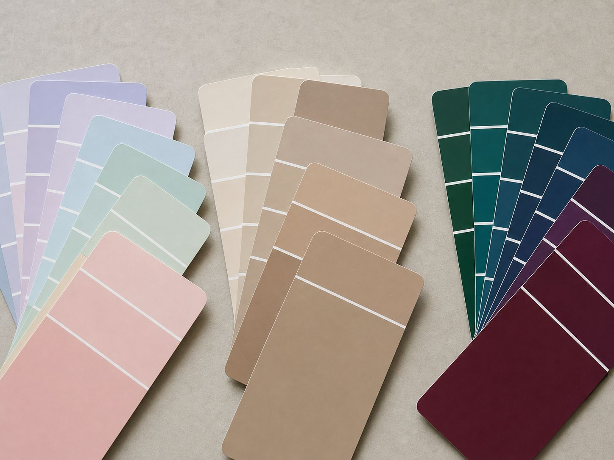
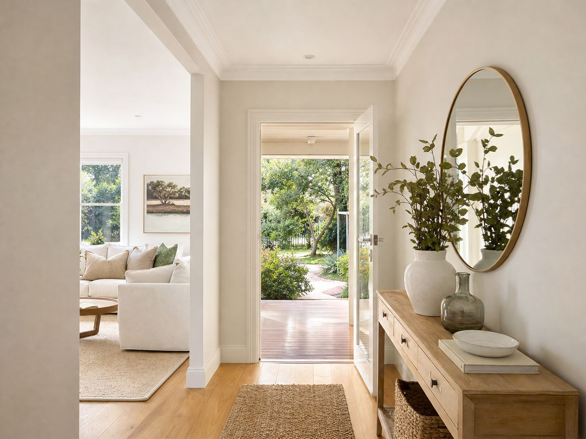

What are the 2027 paint colour trends in Australia?
Dulux released its 2027 colour forecast in September 2026, curated into three palettes: Play, Treasure and Sensory. Together they draw on calming blues, comforting botanical tones and sophisticated jewel-like shades. Dulux's colour and design manager Lauren Treloar described a return to softened yellow-greens and blues with grey and purple undertones across all three palettes, with bright berry and cherry accents injected sparingly.
| Palette | What it is | Colour direction |
|---|---|---|
| Play | Joyful and informal, drawing on music and games | Soft pastels such as muted lilac and powder blue, with bright accents |
| Sensory | Mindful living with Japanese influences and tactile surfaces | Warm soft neutrals and natural, calming tones |
| Treasure | Opulent, layered, with story and heritage | Rich jewel tones; depth over decoration |
Dulux's forecast is one Australian paint manufacturer's view, not a measure of what homeowners are actually choosing, so treat it as direction rather than instruction. Coverage of the forecast also notes that smaller sample pots let you see how a shade responds to your home's natural light before committing.

What do these trends mean for a Geelong home?
| Trend | Where it suits | Best used as | Check first |
|---|---|---|---|
| Soft pastel blues and lilacs | Bedrooms, studies, feature walls | Accent or feature wall | How the colour reads in your light; test at night |
| Botanical greens and yellow-greens | Living areas, bedrooms, joinery; some exteriors | Feature walls, joinery, or a whole room if the light is good | Undertone against timber and floors |
| Warm soft neutrals | Whole-house base colours | Whole-house colour | Compare against your flooring undertone |
| Jewel tones | Studies, bathrooms, dining rooms, doors | Accent or one deliberate room | Preparation and tinted undercoat; use sparingly |
| Berry and cherry accents | Small details, doors, joinery | Accent only | Whether you'll still like it in a few years |
Most of the forecast is about interiors. Exteriors are tied to fixed roofs, brick and the street, so trends usually appear there as a front door, trims or a softened wall colour rather than a complete change. For the outside, our exterior house painting Geelong service inspects the existing coating before pricing, so a new colour goes onto a sound surface.
Should I use a trend colour on the whole house?
Usually not. Large surfaces are costly to redo, and a strong trend colour on every wall ties the home to one moment. Trend colours are better used where they are cheap and easy to change: a feature wall, a front door, cabinetry or soft furnishings. If you like the direction, softer versions of these colours are the safer choice for larger surfaces. For rooms, our interior house painting Geelong service includes test patches on your actual walls, which is the cheapest way to try a trend colour.
What is a timeless colour?
Timeless colours are the ones that suit the fixed elements of your home and don't depend on a fashion cycle: warm and soft neutrals, off-whites, muted greens and blues, and grey-based colours chosen for their undertone. They work because they suit the light, floors and roof rather than because they are fashionable.

Are grey walls going out of style?
We found no authoritative source saying grey is out. What is clear is that the 2027 forecast describes blues and yellow-greens with grey and purple undertones, so grey-based colours are part of the conversation. Whether grey suits your home depends on undertone and light: cool greys can look blue or flat in south-facing and low-light rooms, while warmer greys often sit more comfortably with timber.
How do I decide between a trend and a timeless colour?
- Would I choose this without the forecast?If the answer is yes, it is probably a good fit for you.
- Does it suit what I'm keeping?Roof, flooring and cabinetry limit what will look right.
- How easy is it to change?A door or feature wall is easy. A whole exterior is not.
- Test it in your own light.Sample pots cost little and show how the colour behaves in your home.
| Where to use a trend colour | Cost and effort to change later |
|---|---|
| Feature wall or one room | Low: one wall or room repainted |
| Front door or trims | Low: small surface area |
| Whole interior | Medium to high: every room |
| Whole exterior | High: scaffolding, preparation and a full repaint |
This guide makes no claims about property value, because colour choices vary too much between homes and buyers to support any. Painters of Geelong includes colour consultation with every quote, and test patches on your actual walls are the cheapest way to settle a trend-versus-timeless choice.
Where can I get advice before committing?
A short consultation can save a repaint. Our interior guide and exterior guide cover the process for each, and our feature wall guide shows how a single bold wall is painted. Whether you are painting one room or the whole property, painting services Geelong can be quoted together under one plan.